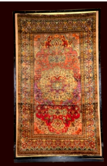

5. द्विपृष्ठीय कालीन (दोनों ओर से बुना हुआ कालीन)

अभिलेख संख्या: XXV-B-47
यह बहुरंगी, रेशमी सतह वाली सुंदर द्वि-सतही कालीन है, जिसमें पुष्प पौधे, सरू के वृक्ष, फूलदान और एक मेहराबदार पैनल के भीतर तालाब में तैरती मछलियाँ दर्शाई गई हैं। पुष्पीय किनारों के बीच कार्टूश में हाफ़िज़ की पंक्तियाँ अंकित हैं। दूसरी ओर, दोहरी मेहराबदार पैनल में पुष्प डिज़ाइन बने हुए हैं। पुष्प लताओं की सीमा सजावटी किनारों के बीच स्थित है। यह द्वि-सतही कालीन फ़ारस (पर्शिया) से उत्पन्न हुई है। द्वि-पक्षीय कालीन बनाने की समृद्ध परंपरा 19वीं शताब्दी से चली आ रही है। गाँव के बुनकर अक्सर मोटे और गाढ़े डिज़ाइनों वाली कालीनें बनाते थे, जिन्हें फ़ारस की सबसे प्रामाणिक और पारंपरिक कालीनें माना जाता है, जबकि बड़े कार्यशालाओं में बनाई जाने वाली कालीनों के डिज़ाइन कलात्मक और पूर्व-नियोजित होते थे।
5. Double Surface Carpet
Acc No: XXV-B-47
This is a beautiful multicoloured double-surface carpet with a silk pile, depicting flowering plants, cypress trees, a vase and fish swimming in a pond within an arched panel. Verses of Hafiz are inscribed in cartouches between the floral borders. On the other side, floral designs fill a double-arched panel. A border of floral vines lies between the ornamental edges. This double-surface carpet originates from Persia. The rich tradition of making double-sided carpets has continued since the 19th century. Village weavers often made carpets with bold, heavy designs, which are considered the most authentic and traditional carpets of Persia, whereas carpets made in the larger workshops had artistic, pre-planned designs.
5. ద్విముఖ కార్పెట్ (రెండు వైపులా నేసిన కార్పెట్)
Acc No: XXV-B-47
ఇది బహురంగుల, పట్టు ఉపరితలం గల అందమైన ద్విముఖ తివాచీ, ఇందులో పూల మొక్కలు, సైప్రస్ చెట్లు, పూలకుండీ మరియు ఒక వంపు ప్యానెల్ లోపల చెరువులో ఈదుతున్న చేపలు చూపించబడ్డాయి. పూల అంచుల మధ్య కార్టూష్లలో హాఫిజ్ పంక్తులు చెక్కబడ్డాయి. మరొక వైపు, రెట్టింపు వంపు ప్యానెల్లో పూల డిజైన్లు ఉన్నాయి. పూల తీగల అంచు అలంకరణ అంచుల మధ్య ఉంది. ఈ ద్విముఖ తివాచీ పర్షియా నుండి ఉద్భవించింది. రెండు వైపుల తివాచీలు తయారు చేసే సమృద్ధమైన సంప్రదాయం 19వ శతాబ్దం నుండి కొనసాగుతోంది. గ్రామంలోని నేతకారులు తరచుగా మందపాటి మరియు దట్టమైన డిజైన్లు గల తివాచీలు తయారు చేసేవారు, వీటిని పర్షియా యొక్క అత్యంత ప్రామాణిక మరియు సంప్రదాయ తివాచీలుగా పరిగణిస్తారు, అయితే పెద్ద కార్యశాలలలో తయారయ్యే తివాచీల డిజైన్లు కళాత్మకంగా మరియు ముందుగా ప్రణాళిక చేయబడినవిగా ఉండేవి.
۵. دو رخی والا قالین
Acc No: XXV-B-47
یہ ایک خوبصورت کثیر رنگی اور ریشمی سطح والا دو رخی قالین ہے ، جس کی ریشم نما سطح پر پھولوں کے پودے سرو کے درخت گلدان اور تالاب میں تیرتی مچھلیاں ایک محرابی پینل میں دکھائی گئی ہیں۔ پینل کے درمیان کارٹو ش میں حافط کی تحریر موجود ہے اور اردگرد پھولوں کے بارڈرز بنے ہیں۔ دوسری طرف دوہری محرابی پینل میں پھولوں کے نقش و نگار ہیں۔ سجاوٹی بارڈرز کے درمیان پھولوں کے بیل بوٹے بھی موجود ہیں ۔ یہ دو رخی والا قالین ایران سے تعلق رکھتا ہے۔دو رخی والے قالین کی امیرانہ روایت انیسویں صدی سے جاری ہے۔گاؤں کے کاریگر عموماً موٹے اور گہرے نقوش والی قالینیں تیار کرتے تھے، جنہیں فارس کی نہایت مستند اور روایتی قالینوں میں شمار کیا جاتا ہے، جبکہ بڑے کارخانوں میں تیار کے جانے والے قالینوں کے نقش و نگار زیادہ فنکارانہ اور پیشگی منصوبہ بندی کے تحت بنائے جاتے تھے
৫. দুই পিঠে ব্যবহারযোগ্য কার্পেট
Acc No: XXV-B-47
রেশমি সুতোর বুননে তৈরি এই দুই পিঠে ব্যবহারযোগ্য রঙিন ও অপূর্ব কার্পেটটি এক শৈল্পিক নিদর্শনের পরিচয় দেয়। এর খিলান আকৃতির প্যানেলের অভ্যন্তরে একটি জলাધારે সাঁতার কাটা মাছ, নানা ধরনের ফুলગાછ, সাইপ্রাস গাছ এবং ফুলদানির সুনিপুণ নকશા ফুটে উঠেছে। কার্পেটের চারপাশের ফুলের লতানো বর্ডারের মাঝে ছোট ছোট অলংকৃত প্যানেল বা 'কার্তুশ'-এ বিখ্যাত কবি হাফিজের কবিতার পঙ্ক্তি বা লিপিচিত্র খোদাই করা হয়েছে। কার্পেটটির অপর পাশে রয়েছে লতাপাতা ও ফুলের কারુકাজ খচিত একটি দ্বৈত খিলানযুক্ত প্যানেল। অলংকৃত বর্ডারগুলোর মাঝখানে অত্যন্ত সূক্ষ্মভাবে ফুলের লতানো নকશા ফুটে উঠেছে। এই দুই পিঠে ব্যবহারযোগ্য কার্পেটটি মূলত পারস্য দেশ থেকে সংগৃহীত। দুই পিঠের এই বিশেষ কার্পেট তৈরির এক সমৃদ্ধ ঐতিহ্য রয়েছে, যা মূলত উনবিংশ শতাব্দী থেকে প্রচলিত। গ্রামের তাঁতিরা প্রায়শই এমন সব কার্পেট তৈরি করেন যেগুলোর নকશા বড় এবং অনেকটা অমসৃণ বা রুক্ষ ধাঁচের হয়ে থাকে। বড় বড় কারখানার সুপরিকল্পিত এবং সূক্ষ্ম শৈল্পিক নকশার তুলনায় এই গ্রামীণ কার্পেটগুলোকেই পারস্য দেশের সবচেয়ে সূক্ষ্ম এবং ঐতিহ্যবাহী নিদর্শন হিসেবে গণ্য করা হয়।
૫. બે સપાટીવાળા જાજમ
Acc No: XXV-B-47
ડબલ સપાટીવાળું, બહુ રંગીન સુંદર કાર્પેટ, રેશમી સપાટી સાથે, જેમાં ફૂલવાળા છોડ, સાયપ્રસ વૃક્ષો, વાસી અને આર્ક આકારના પેનલમાં તળાવમાં તરતા માછલીઓ દર્શાવવામાં આવી છે. ફૂલવાળી બોર્ડર વચ્ચે હાફિઝની શાયરીના કૅર્ટુચીસમાં શિલાલેખ છે. બીજી બાજુ ડબલ આર્ક પેનલ ફૂલવાળા ડિઝાઇનો સાથે છે. શોભાદાયક બોર્ડર વચ્ચે ફૂલ-લતાવાળી બોર્ડર છે. આ ડબલ સપાટીવાળું કાર્પેટ પારસ (પર્શિયા)નું છે. ડબલ સાઇડ કાર્પેટની સમૃદ્ધ પરંપરા 19મી સદી સુધીની છે. ગામડાના કારીગરો મોટાભાગે મોટા અને ક્યારેક થોડી ખુરદરી નકશીઓ સાથે રગ બનાવતા, જેને પારસના સૌથી પ્રામાણિક અને પરંપરાગત રગો માનવામાં આવે છે, જયારે મોટા વર્કશોપોમાં પહેલેથી નિર્ધારિત અને કળાત્મક ડિઝાઇન વપરાતી.
5. ಡಬಲ್ ಸರ್ಫೇಸ್ ಕಾರ್ಪೆಟ್
Acc No: XXV-B-47
ರೇಷ್ಮೆಯ ಮೇಲ್ಮೈಯನ್ನು ಹೊಂದಿರುವ, ಎರಡು ಮುಖಗಳ ಬಹು-ವರ್ಣದ ಸುಂದರವಾದ ರತ್ನಗಂಬಳಿ ಇದಾಗಿದೆ. ಇದರ ಕಮಾನಿನ ಆಕಾರದ ಫಲಕದೊಳಗೆ ಹೂವಿನ ಗಿಡಗಳು, ಸೈಪ್ರೆಸ್ ಮರಗಳು, ಹೂದಾನಿ ಮತ್ತು ನೀರಿನ ತೊಟ್ಟಿಯಲ್ಲಿ ಈಜುತ್ತಿರುವ ಮೀನುಗಳ ವಿನ್ಯಾಸಗಳನ್ನು ಇದು ಹೊಂದಿದೆ. ಇದರ ಹೂವಿನ ಅಂಚುಗಳ ನಡುವೆ ಇರುವ ಚೌಕಟ್ಟುಗಳಲ್ಲಿ , ಪ್ರಸಿದ್ಧ ಪರ್ಷಿಯನ್ ಕವಿ 'ಹಾಫಿಜ್' ಅವರ ಬರಹಗಳನ್ನು ಮೂಡಿಸಲಾಗಿದೆ. ಇದರ ಇನ್ನೊಂದು ಬದಿಯಲ್ಲಿ, ಹೂವಿನ ವಿನ್ಯಾಸಗಳಿರುವ ಎರಡು ಕಮಾನುಗಳ ಫಲಕವನ್ನು ಕಾಣಬಹುದು. ಇದರ ಅಲಂಕಾರಿಕ ಅಂಚುಗಳ ನಡುವೆ ಹೂವಿನ ಬಳ್ಳಿಯ ವಿನ್ಯಾಸವನ್ನು ಇದು ಹೊಂದಿದೆ. ಎರಡು ಮುಖಗಳನ್ನು ಹೊಂದಿರುವ ಈ ರತ್ನಗಂಬಳಿಯು ಪರ್ಷಿಯಾ ದೇಶದಲ್ಲಿ ರೂಪುಗೊಂಡಿದೆ. ಎರಡು ಬದಿಯ ರತ್ನಗಂಬಳಿಗಳನ್ನು ನೇಯುವ ಈ ಶ್ರೀಮಂತ ಸಂಪ್ರದಾಯವು 19ನೇ ಶತಮಾನದಷ್ಟು ಹಳೆಯದಾಗಿದೆ. ಹಳ್ಳಿಗಳ ನೇಕಾರರು ಹೆಚ್ಚಾಗಿ ದಪ್ಪನಾದ ಮತ್ತು ಕೆಲವೊಮ್ಮೆ ಹೆಚ್ಚು ಒರಟಾದ ವಿನ್ಯಾಸಗಳಿರುವ ಜಮಖಾನೆಗಳನ್ನು ತಯಾರಿಸುತ್ತಾರೆ. ದೊಡ್ಡ ಕಾರ್ಯಾಗಾರಗಳಲ್ಲಿ ರೂಪಿಸುವ ಕಲಾತ್ಮಕ ಮತ್ತು ಪೂರ್ವ-ಯೋಜಿತ ವಿನ್ಯಾಸಗಳಿಗಿಂತ ಭಿನ್ನವಾಗಿ, ಹಳ್ಳಿಗಳಲ್ಲಿ ನೇಯ್ದ ಇಂತಹ ಜಮಖಾನೆಗಳನ್ನು ಪರ್ಷಿಯಾದ ಅತ್ಯಂತ ಅಸಲಿ ಮತ್ತು ಸಾಂಪ್ರದಾಯಿಕ ರತ್ನಗಂಬಳಿಗಳೆಂದು ಪರಿಗಣಿಸಲಾಗಿದೆ.
୫. ଡବଲ୍ ସର୍ଫେସ୍ ଗାଲିଚା (ଉଭୟ ପାର୍ଶ୍ୱରେ ବୁଣା ଗାଲିଚା)
Acc No: XXV-B-47
ଏହା ଏକ ବହୁରଙ୍ଗୀ, ରେଶମୀ ସତହଯୁକ୍ତ ସୁନ୍ଦର ଦ୍ୱିସତହୀ ଗାଲିଚା, ଯାହାରେ ଫୁଲ ଗଛ, ସରୁ ଗଛ, ଫୁଲଦାନ ଏବଂ ଏକ ତୋରଣାକାର ପ୍ୟାନେଲ୍ ଭିତରେ ପୋଖରୀରେ ପହଁରୁଥିବା ମାଛମାନଙ୍କ ଚିତ୍ରଣ ହୋଇଛି। ଫୁଲର ସୀମାଗୁଡ଼ିକ ମଧ୍ୟରେ ଥିବା କାର୍ଟୁଶ୍ରେ ହାଫିଜଙ୍କ ଶ୍ଲୋକ ଲେଖାଯାଇଛି। ଅନ୍ୟପଟେ, ଦୁଇତି ତୋରଣାକାର ପ୍ୟାନେଲ୍ ମଧ୍ୟରେ ଫୁଲମାନଙ୍କ ଡିଜାଇନ୍ ଅଛି। ଫୁଲ ଲତାର ସୀମା ସଜାଯାଇଥିବା କିନାରା ମଧ୍ୟରେ ଅବସ୍ଥିତ। ଏହି ଦ୍ୱିସତହୀ ଗାଲିଚାର ଉତ୍ପତ୍ତି ଫାରସ୍ (ପର୍ସିଆ)ରୁ ହୋଇଛି। ଦୁଇପଟିଆ ଗାଲିଚା ବୁନିବାର ସମୃଦ୍ଧ ପରମ୍ପରା ୧୯ଶତାବ୍ଦୀଠାରୁ ଚାଲିଆସୁଛି। ଗ୍ରାମୀଣ ବୁନକାରମାନେ ସାଧାରଣତଃ ମୋଟା ଓ ଗାଢ଼ ଡିଜାଇନ୍ର ଗାଲିଚା ତିଆରି କରୁଥିଲେ, ଯେଉଁଗୁଡ଼ିକୁ ଫାରସର ସବୁଠୁ ପ୍ରାମାଣିକ ଓ ପାରମ୍ପରିକ ଗାଲିଚା ବୋଲି ଗଣାଯାଉଥିଲା; ଯେଉଁଠାରେ ବଡ଼ କାରଖାନାମାନେ ତିଆରି କରୁଥିବା ଗାଲିଚାର ଡିଜାଇନ୍ଗୁଡ଼ିକ ଶିଳ୍ପୀୟ ଓ ପୂର୍ବ ନିର୍ଦ୍ଧାରିତ ହୋଇଥାଏ।
5. द्विपृष्ठीय गालिचा (दोन्ही बाजूंनी विणलेला गालिचा)
Acc No: XXV-B-47
हा बहुरंगी, रेशमी पृष्ठभाग असलेला सुंदर द्वि-पृष्ठीय गालिचा आहे, ज्यात फुलझाडे, सरूचे वृक्ष, फुलदाणी आणि एका कमानदार पॅनेलमध्ये तळ्यात पोहणारे मासे दाखवले आहेत. फुलांच्या किनारींमध्ये कार्तूशमध्ये हाफिजच्या ओळी कोरलेल्या आहेत. दुसऱ्या बाजूला, दुहेरी कमानदार पॅनेलमध्ये फुलांच्या नक्षी आहेत. फुलांच्या वेलींची किनार सजावटीच्या कडांमध्ये आहे. हा द्वि-पृष्ठीय गालिचा पर्शियामधून आलेला आहे. दुहेरी बाजूचे गालिचे बनवण्याची समृद्ध परंपरा १९व्या शतकापासून चालत आली आहे. खेड्यातील विणकर बहुधा जाड आणि ठसठशीत नक्षींचे गालिचे बनवत असत, जे पर्शियाचे सर्वात अस्सल आणि पारंपरिक गालिचे मानले जातात, तर मोठ्या कार्यशाळांमध्ये बनणाऱ्या गालिच्यांच्या नक्षी कलात्मक आणि पूर्वनियोजित असत.
5. ഇരുവശ പരവതാനി (ഇരുവശത്തും നെയ്ത പരവതാനി)
Acc No: XXV-B-47
ഇത് ബഹുവർണ്ണവും പട്ടുപ്രതലവുമുള്ള മനോഹരമായ ഇരുവശ പരവതാനിയാണ്, അതിൽ പൂച്ചെടികൾ, സൈപ്രസ് മരങ്ങൾ, പൂപ്പാത്രം, ഒരു കമാനാകൃതിയിലുള്ള പാനലിനുള്ളിൽ കുളത്തിൽ നീന്തുന്ന മീനുകൾ എന്നിവ ചിത്രീകരിച്ചിരിക്കുന്നു. പുഷ്പാലങ്കൃത അരികുകൾക്കിടയിലെ കാർട്ടൂഷിൽ ഹാഫിസിന്റെ വരികൾ ആലേഖനം ചെയ്തിരിക്കുന്നു. മറുവശത്ത്, ഇരട്ട കമാനാകൃതിയിലുള്ള പാനലിൽ പുഷ്പ ഡിസൈനുകൾ ഉണ്ട്. പൂവള്ളികളുടെ അതിര് അലങ്കാര അരികുകൾക്കിടയിലാണ് സ്ഥിതിചെയ്യുന്നത്. ഈ ഇരുവശ പരവതാനി പേർഷ്യയിൽ നിന്ന് ഉത്ഭവിച്ചതാണ്. ഇരുവശ പരവതാനികൾ നിർമ്മിക്കുന്ന സമ്പന്നമായ പാരമ്പര്യം 19-ാം നൂറ്റാണ്ട് മുതൽ തുടർന്നുവരുന്നു. ഗ്രാമത്തിലെ നെയ്ത്തുകാർ പലപ്പോഴും കട്ടിയുള്ളതും ഇടതൂർന്നതുമായ ഡിസൈനുകളുള്ള പരവതാനികൾ നിർമ്മിച്ചിരുന്നു, അവയാണ് പേർഷ്യയിലെ ഏറ്റവും ആധികാരികവും പരമ്പരാഗതവുമായ പരവതാനികളായി കണക്കാക്കപ്പെടുന്നത്, അതേസമയം വലിയ ശില്പശാലകളിൽ നിർമ്മിക്കപ്പെടുന്ന പരവതാനികളുടെ ഡിസൈനുകൾ കലാപരവും മുൻകൂട്ടി ആസൂത്രണം ചെയ്തതുമായിരുന്നു.